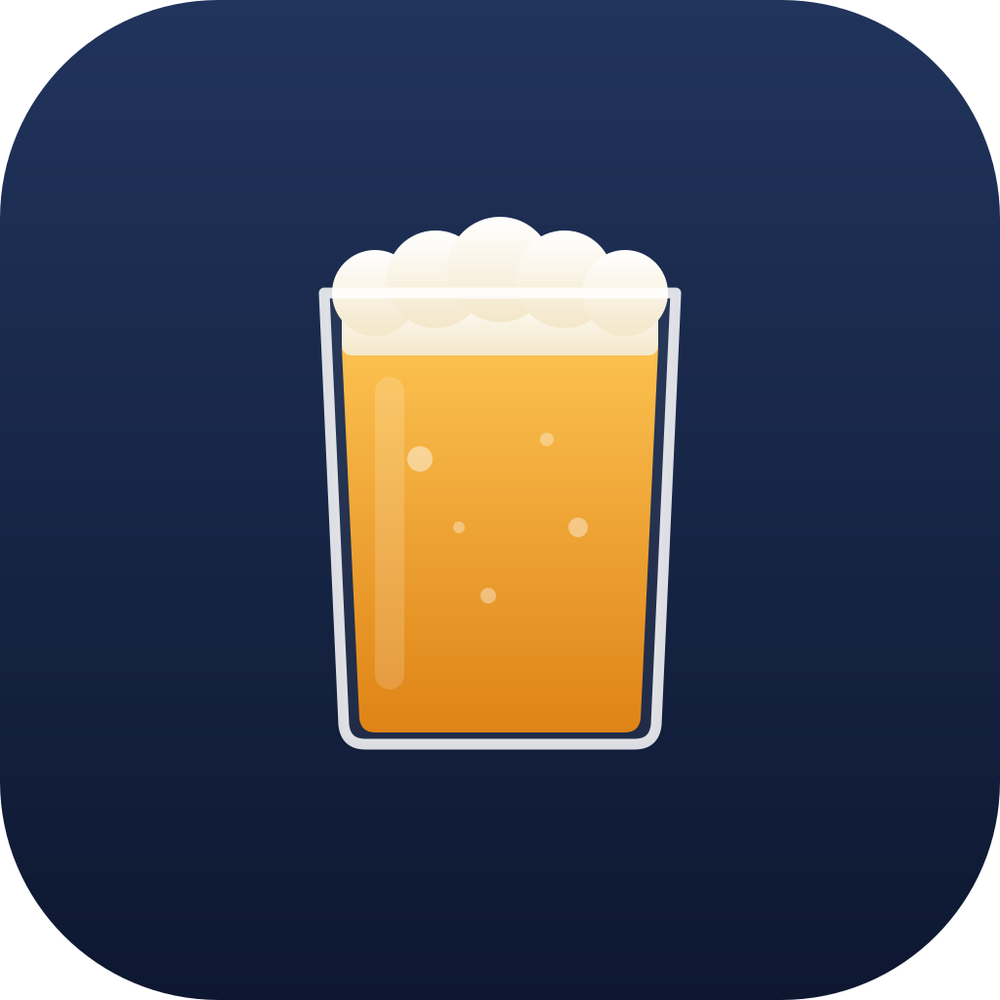

BEER
BOTTLED EXECUTABLE ENVIRONMENT RUNNER
Play your Windows Steam games on an Apple Silicon Mac, with your saves synced to Steam Cloud.

No Steam client, no CrossOver, no Windows PC
I built BEER so I could play Kingdom Come: Deliverance and its sequel on my MacBook and pick up from the saves I'd left on my Windows PC. Both games run, and their saves sync both ways.
Sign in by scanning a QR code with the Steam Mobile App, pick a game from your library and click Install. BEER downloads the game, sets it up in its own Wine bottle on Apple's Game Porting Toolkit, and syncs your saves each time you play.
- Download & openGet
BEER.zipfrom the latest release and move the app to Applications. - Scan the QR codeApprove the sign-in in the Steam Mobile App. BEER never asks for your password.
- Install & playPick a game and click Install. The first install also downloads the GPTK runtime, which is large. Then click Play.
The Steam features you'd miss, on your Mac
QR sign-in
You approve the login on your phone. No password and no Steam Web API key.
Two-way Steam Cloud saves
Pulls before you play and pushes after you quit, with a local backup before every write.
Presence, play time & achievements
Friends see what you're playing, hours count on your profile, and achievements you unlock are recorded on your account.
Updates, pause & resume
BEER flags games that are behind on updates. You can pause a download, even across restarts, and resuming fetches only the missing files.
One bottle per game
Each game gets its own Wine prefix, so runtimes and settings from one game never affect another.
Per-game runtime control
Choose GPTK or Wine, DXVK or DXMT, the display mode, the Windows version, launch arguments and environment variables.
Controllers
Xbox, PlayStation and Steam controllers, in any mix, through BEER's own SDL build.
DLC you own
Each game page lists the game's DLC, shows which ones you own and installs them.
A Swift app driving a small Steam helper
Most of the engineering went into the parts that touch Steam: the protocol boundary, the save sync and a logon strategy that stays under Steam's rate limits.
The app sends the helper one command at a time over a JSON CLI. Each command prints one JSON result, which Swift decodes into typed errors such as .authExpired and .rateLimited.
Why there are two processes
The Swift app owns the UI, bottle management, installs, launches and every sync decision. All of the Steam protocol work (auth, owned games, DLC, presence, achievements and cloud file transfer) happens in a separate .NET program built on SteamKit2.
That keeps the boundary small, typed and testable. The Swift side mocks the helper in tests, so none of them need a Steam account.
Running games without the Steam client
The real Steam client doesn't run on GPTK, and most games quit at startup if no client answers. BEER replaces the game's steam_api DLLs with the open-source GBE_Fork implementation of the Steamworks API, which answers those calls on your Mac. It's applied only to games your account owns, downloaded with your own sign-in.
It reports your real SteamID, declares only the DLC Steam says you own, and sends achievements to your real account. The original DLLs are kept, and one button restores them.
Saves are the one thing it can't get wrong
Losing a hundred hours of progress would end anyone's trust in the app, so the sync is deliberately conservative.
- Pull before play, push afterBEER syncs before it launches a game and again when the game exits.
- Back up before every writeEvery tracked save is copied to a timestamped backup folder first. No sync runs without that copy.
- Timestamps decide, SHA-1 confirmsA file only overwrites a strictly older copy. If the timestamps differ but Steam's SHA-1 matches the local bytes, the file is skipped, which avoids false conflicts.
- Path mappingSteam's Windows cloud paths map into each bottle's
drive_c, matching the folder layout the game's existing cloud files already use. - A readable logEach sync writes a plain-text
last-sync.log, so you can see exactly what moved.
Tested like it handles your data, because it does
Security
- No passwords. QR sign-in through the Steam Mobile App only.
- Tokens in the Keychain. DepotDownloader's credential file is short-lived and deleted when the process exits.
- No Web API key. Everything goes through the authenticated client protocol.
- No shell interpolation. External processes run with argument arrays.
Testing & CI
- The test suites mock the app's boundary with its helpers and never sign in to Steam.
- They cover JSON and error parsing, SHA-1 digests, emulator config writes and restores, achievement detection and bottle migration.
- The .NET tests cover how logon failures are classified, cloud file unwrapping and exit codes.
- GitHub Actions runs both suites, release builds and a C# style check on every pull request.

Get it running
Download BEER.zip from the latest release, unzip it and move BEER.app to Applications. The build isn't notarized yet, so run this once in Terminal:
To build from source, see the README. If a game works or doesn't, please open an issue so it can be listed.
Known limitations
- Games with anti-cheat, or that need Steam's multiplayer services, aren't supported.
- GPTK runs games borderless, so there's no macOS title bar or green fullscreen button.
- Adding a non-Steam game from a folder is new and still rough.
- Builds are ad-hoc signed, not notarized.
Release history
What's new in BEER
Release announcements from the project's GitHub Discussions.
BEER 0.8.0 is out 🍺
The big one: BEER now has its own GPTK 4 runtime, downloadable right inside the app. It's CrossOver 26's open-source Wine with Apple's D3DMetal 4, and the newer Wine gets games running that GPTK 3.0 couldn't start, like…
Read the announcementBEER 0.6.0 is out 🍺
The big one: controllers just work (Todd Howard reference). Xbox, PlayStation (DualShock 4 / DualSense) and Steam controllers can all be plugged in at once and every one of them controls the game. Play splitscreen games…
Read the announcementBEER 0.5.1 is out: play your Steam library on Apple Silicon Macs
BEER (Bottled Executable Environment Runner) is a native macOS app that installs and runs Windows Steam games on Apple Silicon, using Apple's Game Porting Toolkit. Each game gets its own Wine bottle, so you can tune…
Read the announcementNeed something like this built?
I designed, built, tested and maintain BEER on my own. I can do the same for your iOS or Mac app.